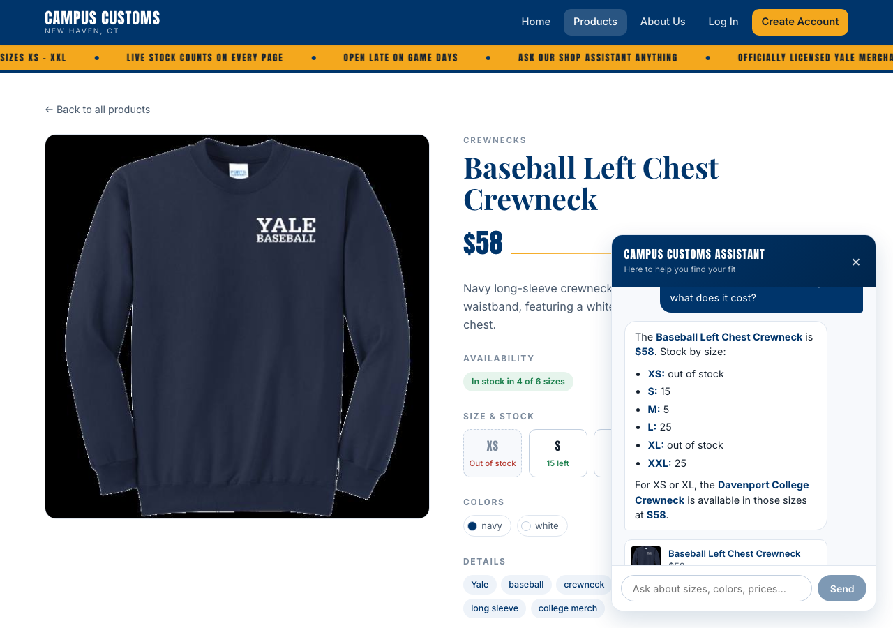
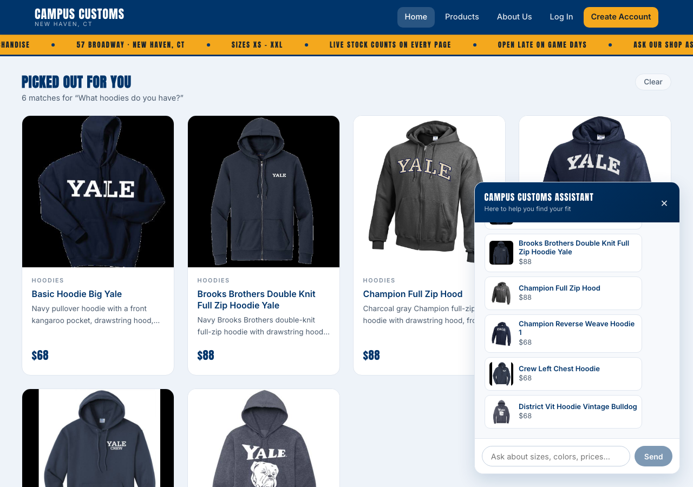
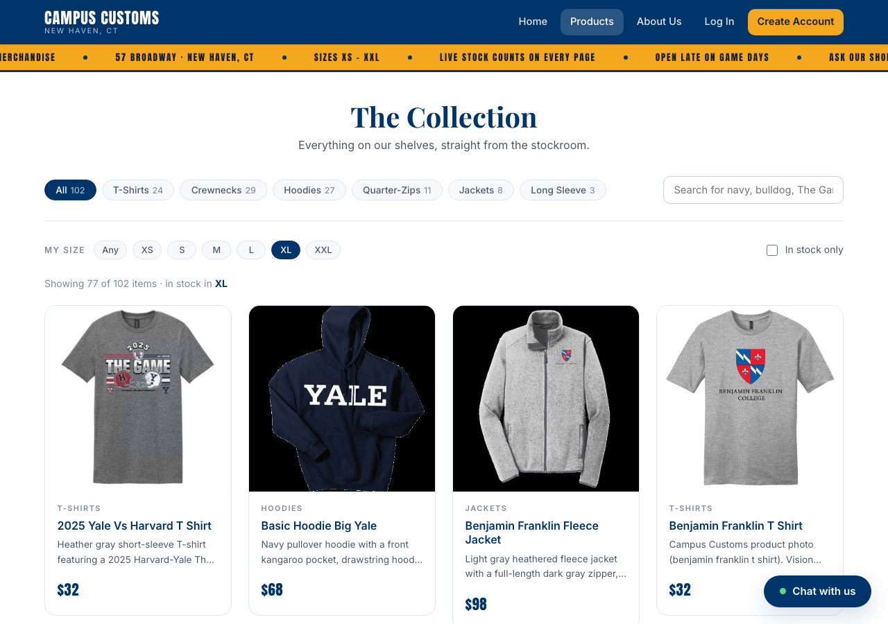
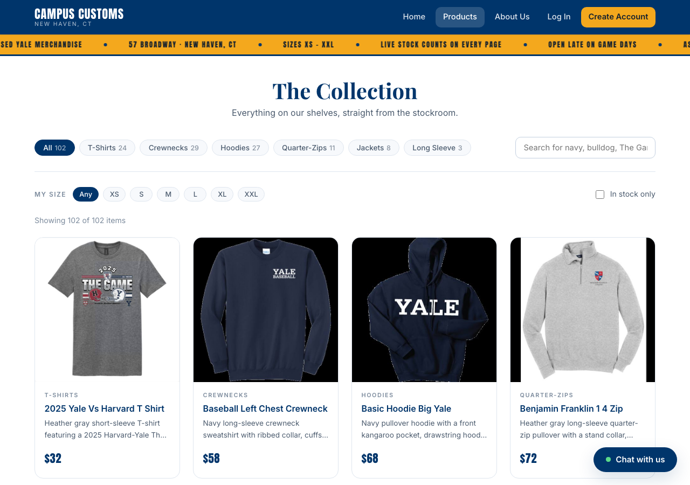

Three checks run against the running site, with screenshots.
Frontend: Vite dev server · Backend: uvicorn main:app --port 8000
· Captured 7 October 2026
1Chat checks real inventory and price
Asked the assistant: “How many Baseball Left Chest
Crewnecks are left in each size, and what does it cost?”

The assistant's reply, captured on the product page for the same item.
The assistant returned a per-size breakdown and the price, and said
plainly that XS and XL are out of stock rather than softening
it. It then offered the Davenport College Crewneck, which is in stock in
those two sizes, at the same $58.
What this proves: the numbers come from the database, not the
model. The product page behind the chat panel independently shows
$58, “In stock in 4 of 6 sizes”, XS — Out of stock
and S — 15 left. Chat and page agree in a single frame.
Field
Agent said
Database
Match
Price
$58
58.0
✓
XS
out of stock
0
✓
S
15
15
✓
M
5
5
✓
L
25
25
✓
XL
out of stock
0
✓
XXL
25
25
✓
2A category question fills the page with product cards
Asked the assistant: “What hoodies do you have?”

Asking in the chat dropped a “Picked out for you” band onto the page itself.
The band reads “6 matches for ‘What hoodies do you have?’”
and renders full product cards — image, category, name, description and
price — on the website, not only inside the chat widget. The same matches
also appear as compact cards in the panel.
What this proves: the agent returns structured product data, which
the front end renders. The cards are built from the agent's tool results,
so a card cannot show a product the agent invented. Every card here is a
real hoodie at its catalogue price — $68 and $88 — and each one opens its
full detail page when clicked, exactly like a card from the catalogue grid.
3Usability feature: filter the catalogue by your size
Action: on the Products page, clicked the
XL chip under “My size”.

The catalogue filtered to items actually available in XL.
The result line reads “Showing 77 of 102 items · in stock in XL”.
The filter is evaluated against live inventory on the backend, so it hides
anything that exists in XL but has none left.
What this proves: the usability improvement is live and it matters —
25 of the 102 products are dead ends for an XL shopper. Before this
filter, the only way to discover that was to open products one at a time.
This is one of the two front-end improvements from Problem 9; the others
are the Markdown-formatted chat replies visible in check 1 (bold prices
and a real bullet list, no raw asterisks) and, on the backend, the
in-stock alternatives the assistant offered in check 1.

For comparison: the same page unfiltered, showing all 102 items.